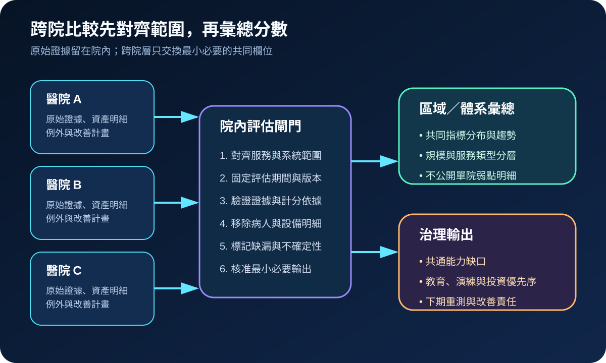
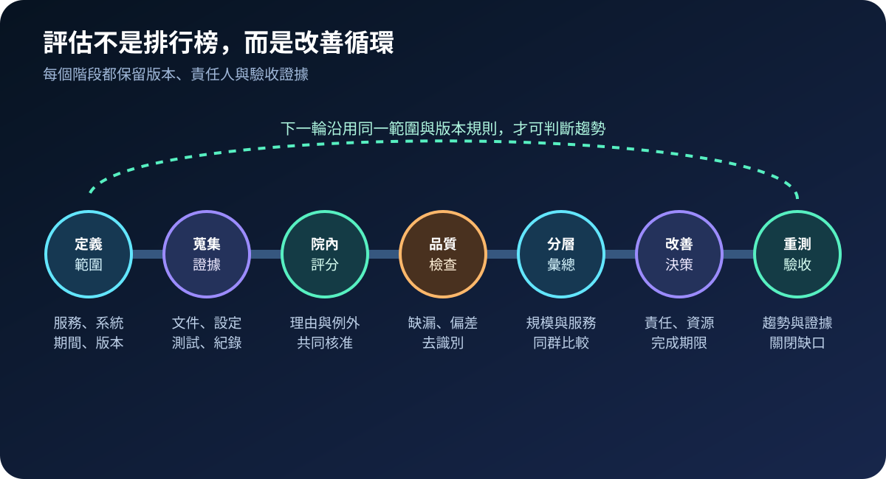
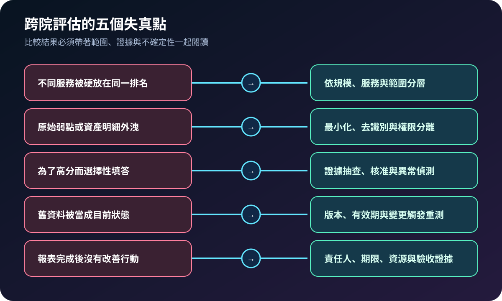

醫療資安國際觀察 · 2026-11-04
醫療資安評估如何跨院比較而不失真：從範圍對齊到分層彙總
作者：Dr. William｜醫療資訊與資安治理實務工作者
跨院資安評估的價值不是排出名次，而是找出共同能力缺口、資源需求與區域協作優先序。若服務範圍、證據期間與計分規則不同，再精密的分數也可能產生錯誤比較。
名詞解釋：組織輪廓、分層彙總與比較同群
組織輪廓把目前與目標資安成果放在特定任務、系統與風險範圍內。分層彙總是先依醫院規模、服務類型、關鍵系統與評估期間分組，再計算分布與趨勢。比較同群則要求比較對象具有可對齊的範圍；它不是把所有醫院壓成單一總分。
國際現況與適用邊界
美國 HHS ASPR TRACIE 於 2026 年提供自願性的醫療機構層級資安評估，可用於盤點現況、脆弱處與準備能力，也可支援醫療聯盟成員討論。RISC 2.0 資安模組把回答對照 NIST CSF 2.0 與 HHS Cybersecurity Performance Goals，協助找出差距及投資優先序。ENISA NIS360 2026 則在歐盟 NIS2 高關鍵性部門層級評估成熟度與關鍵性，分析單位包含主管機關、機構、歐盟組織與法規生態，並非單院排名。NIST SP 1301 強調組織輪廓必須依任務、利害關係人、威脅與要求定義範圍，再比較目前與目標成果。
台灣適用原則：上述工具可作為範圍設計、共同欄位、差距分析與改善追蹤的參考；美國自願工具、HHS 目標、NIST 方法與歐盟 NIS360 均不是台灣醫療機構的法定分級或排名制度。資料交換仍須依台灣法令、主管機關要求、契約、個資與機構治理程序判定。
規劃：先決定比較問題，再決定資料
計畫應先寫明目的，例如區域演練、共同採購、教育支援或董事會監督；再固定服務範圍、資產邊界、評估版本、證據有效期、缺漏值處理與核准角色。跨院資料最少應包含題目版本、範圍標籤、評估期間、分數依據、證據狀態、不確定性與改善期限，不應直接包含病人資料、可利用弱點細節、管理帳號或設備定位資訊。驗收指標可包含欄位完整率、證據抽查通過率、同群覆蓋率、過期資料率、改善項目按期關閉率及重測進步率。
實作：七階段把自評變成改善閉環
- 定義範圍：確認臨床服務、系統、據點、期間與版本。
- 蒐集證據：連結政策、組態、紀錄、測試與演練結果。
- 院內評分：由控制負責人、資安與臨床共同核准理由及例外。
- 品質檢查：找出缺漏、矛盾、過期資料與選擇性填答。
- 分層彙總：依規模與服務類型建立同群分布，不公開單院弱點。
- 改善決策：把共通缺口轉成責任人、資源、期限與驗收條件。
- 重測驗收：沿用相同範圍與版本規則，確認趨勢與缺口關閉。

風險：分數可比較，不代表情境相同
常見失敗包括把不同服務範圍放進同一排名、外送原始弱點明細、為高分選擇性填答、使用過期資料，以及只交付儀表板卻沒有改善責任。控制方式是採同群分層、資料最小化與去識別、證據抽查與異常檢查、設定資料有效期與變更觸發重測，並要求每項缺口具有責任人、資源、期限及關閉證據。

可執行清單
- 比較目的、服務範圍、期間與評估版本是否書面固定？
- 每個分數是否連回證據、責任人與不確定性？
- 跨院輸出是否排除病人資料、帳號、設備定位及可利用弱點細節？
- 是否依規模、服務類型與系統邊界建立比較同群？
- 缺漏、過期與矛盾資料是否有明確處理規則？
- 彙總結果是否轉成責任、資源、期限及重測驗收？
來源
- HHS ASPR TRACIE｜Health Care Facility-Level Cybersecurity Assessment（2026；頁面更新：2026-10-29；查閱：2026-11-04）
- HHS ASPR TRACIE｜RISC 2.0 Cybersecurity Module（2026；頁面更新：2026-10-23；查閱：2026-11-04）
- ENISA｜ENISA NIS360 2026（發布：2026-05-28；查閱：2026-11-04）
- NIST｜SP 1301: CSF 2.0 Quick-Start Guide for Creating and Using Organizational Profiles（發布：2024-02-26；查閱：2026-11-04）
內容說明
本文依健康台灣深耕計畫相關治理內容整理，並參考 HHS 醫療機構評估工具、RISC 2.0、ENISA NIS360 與 NIST 組織輪廓方法，說明跨院比較的範圍、證據、資料保護、彙總與改善閉環；不把國外自願工具、部門評估或技術框架視為台灣醫療機構的法定分級，也不取代主管機關公告、個資審查、機構治理程序或法律意見。